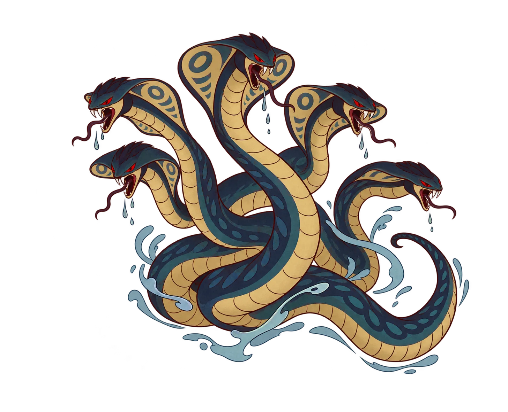

Which bestiary did you grow up with?
Pick the stories you know best, and we'll show you where your
monsters turn up.


In Izumo, in western Japan, an eight-headed serpent eats one daughter a year. When the storm god Susanoo comes to stop it, he doesn't fight it head-on. He sets out eight vats of sake, waits until every head is drunk, and cuts the serpent to pieces.
Thousands of kilometres away, on India's Yamuna river, a many-headed serpent named Kaliya is poisoning the water. A boy god, Krishna, dives in and dances on its heads until it gives up and leaves.
Nothing in the historical record links these two stories. Yet both have a river, a serpent with too many heads, and a hero who wins by being cleverer rather than stronger.
Once you notice it, you can't stop seeing it.
A dog guards the door to the dead in Greece, in Scandinavia and in India.
A serpent grows big enough to wrap around the whole world.
A woman is far too beautiful, and there is always something under the hem.
So which is it? Did these monsters travel, carried along by traders, armies and monks? Or did people who never met look at the same dark river and imagine the same thing?
To find out, I built a bestiary.
Building a bestiary
The bestiary holds 96 creatures from four traditions: 28 Greek, 28 Hindu, 24 Japanese and 16 Norse. Each was checked against its source text and described the same way:
- its body,
- its number of heads,
- its job in the story,
- the god or hero it's tied to,
- and how famous it still is.
The bar for entry was simple. A monster needed a real shape and a real part to play. Named horses, background hounds, nameless nature spirits and one-off cameos were turned away at the door.
Strip away the names and the costumes, and almost every creature falls into one of six families.
Serpents and dragons are the oldest fear in the book. All four traditions have them, Greece most of all, with six. One is big enough to circle the world; another holds it up.
Many-headed beasts mean more heads, more problems: the seven-headed Hydra, eight-headed Orochi, ten-headed Ravana.
Shapeshifters teach you never to trust a helpful stranger. The fox Kitsune, the mountain hag Yamauba and the rakshasi Hidimbā all wear borrowed faces. In this bestiary they only live in Japan and India.
Human hybrids are half person, half warning: the Minotaur, the centaurs, the crow-winged Tengu. Greece has 15 hybrids. The Norse have exactly one, Odin's eight-legged horse Sleipnir.
Wolves and hounds are loyal to the dead and hungry for the sun. Cerberus guards a gate, Fenrir waits to swallow a god, and Sköll and Hati chase the sun and moon across the sky.
Beautiful, lethal women ask you to look closer. There's always a tail, a second mouth or a spider underneath. Japan has seven of them, more than anyone else.
Every monster has a job
What creatures show up and where?
A monster is never in a story just to look frightening. It's there to do something: guard a gate, end the world, block a hero's path. So before asking which monsters look alike, it's worth asking what each culture puts them to work on.
Same beast, different lore
Now for the resemblances. Every creature in the bestiary was matched against the others: some are near-twins, some only share a family likeness, and some have no double at all.
How similar are they really?
Each creature is pulled toward the others it most closely parallels — near-identical parallels pull tight, loose thematic echoes stay loose, and creatures with no real equivalent drift to the edges on their own. Drag any dot to explore; hover for details.
The tightest knot in the web is a story told in every one of these cultures: a giant serpent, and the storm god who kills it. Apollo kills Python. Zeus buries Typhon under a volcano. Indra frees the world's rivers from Vritra. Susanoo gets Orochi drunk. Thor and Jörmungandr will kill each other at the end of the world.
But a line only measures shape, not purpose. Shesha and Jörmungandr are near-twins on this chart: both serpents so vast that their bodies are part of the world itself. Yet Shesha holds creation up, while Jörmungandr is waiting to drag it down. The quadrant plot already put them on opposite sides.
Then comes the surprise. The most connected creatures in the whole bestiary aren't serpents at all. They're Medusa, Lamia and the yakshini, each tied to ten others.
She's beautiful, and she'll kill you.
Medusa turns you to stone. Huldra hides a cow's tail under her dress. Jorōgumo, the "binding bride spider", wraps you in silk. Yuki-onna freezes you in your sleep. Every one of the four traditions has her, and each dresses her in its own landscape: snow in Japan, forest in Scandinavia, water and trees in India. She, not the serpent, is the most universal monster here.
And some monsters belong to one people only. 24 creatures have no double anywhere: the Sphinx with her riddle, the Valkyries choosing the dead, Hanuman leaping to Lanka, Amabie rising from the sea to warn of plague.
Who shares, and who stands alone
Which mythology has the most shared vs. unique creatures?
Ribbon thickness = strength of parallels between two mythologies (weighted by how close the match is). The band that curls back into a mythology's own arc represents creatures with no real equivalent elsewhere — genuinely unique to that tradition.
Zoom out from single monsters to whole traditions, and a map of friendships appears.
Greece and India share the most: 25 parallels between them. Japan and Scandinavia barely speak, with just 9.
The bands that curl back home are the true originals, and here the two biggest bestiaries part ways. 39% of Greek monsters have no double in any other tradition, the most of the four. In the Hindu tradition, only 21% don't. Greece invented the most monsters of its own; India's echo furthest.
One caveat belongs here. Japan's yōkai come from a folklore that is still growing, while the other three draw on old, closed canons. Japan's arc is a snapshot of a living tradition, not a finished one.
Borrowed, inherited or imagined?
The sharing is real. But how did it happen? There are really three ways two cultures end up with the same monster. It travelled, carried along a trade route, a conquest or a religion. It was inherited from a common ancestor, long before either culture existed. Or it was imagined twice, by people who never met but feared the same things.
Before reading on, try it yourself.
Garuda and Karura are the clearest case of a monster on the move. When Buddhism carried Garuda from India to Japan, he arrived almost unchanged: the same eagle body, the same hatred of serpents. In Japan he became Karura, one of the guardians of the goddess Kannon.
The hounds of the dead are older still. Greece, Scandinavia and India all descend from the same ancient Indo-European family. A 19th-century theory traced Cerberus's name to one of Yama's dogs. Most linguists now reject it, but the idea itself may have been inherited: the hound could have been guarding the dead before any of these cultures existed. It's telling who's missing: Japan, outside that family, has no hellhound at all.
But those are the exceptions. One documented borrowing and one possible inheritance, out of 91 parallels between cultures. Almost everything else was imagined, independently, again and again. Rivers flood, snakes bite, beautiful strangers lie, and the dead need watching. People everywhere told themselves the same stories about it.
The last page
Every culture built a bestiary. Most built the same one, then gave each monster a different job.
The data can show that the parallels exist. Except for a couple of cases, it can't prove why.
The rest of the bestiary is below. Go and meet them.
About this bestiary
This is a look at four traditions, not a survey of world mythology. Hundreds of other cultures have their own monsters, and many of them would change this picture. Within these four, the 96 creatures were chosen for having a defined form and a central role in a story, so plenty of minor beings are left out.
The matches between creatures, their roles and their fame scores are my own judgements, based on primary texts and reference sources such as Theoi.com, the Sacred Texts Archive, the Kojiki and the Poetic Edda. Japanese yōkai come from a folklore that is still growing, so that tradition can never be counted as complete.